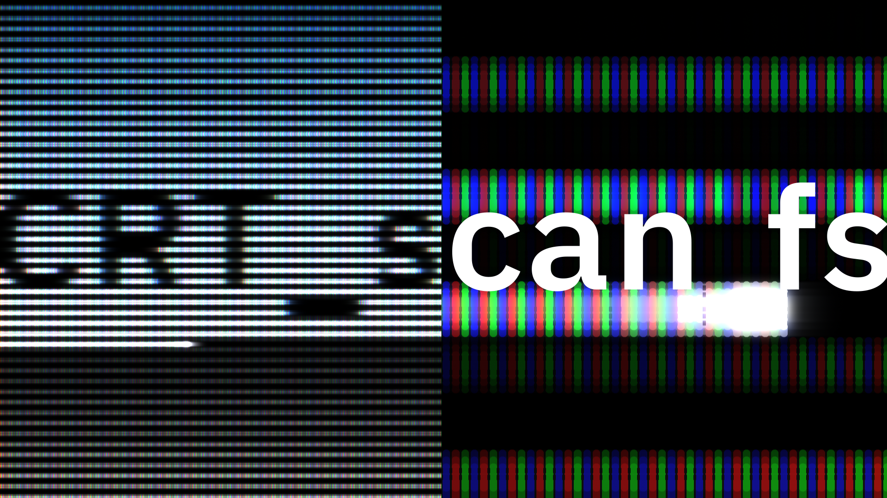
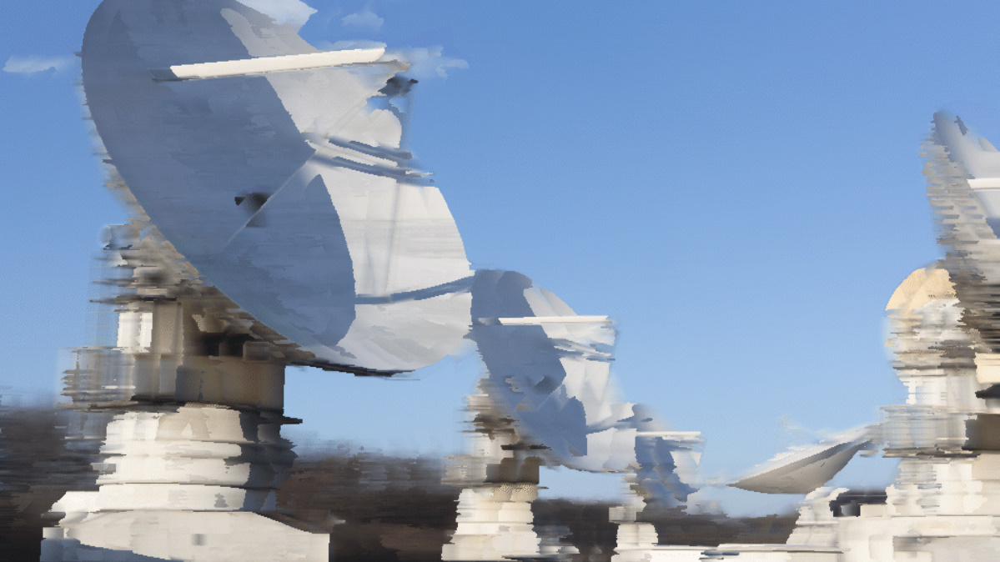

CRTディスプレイの再現
hazuqu

ファイル
CRT_scan.fs使い方
ISF4AEを使ってください。詳しくは
AE向けのXY別軸の桑原(Kuwahara)フィルタ
2025-11-14
映像を作りました こういう映像を作りました。手書き感の演出としてKuwaharaフィルタを使う予定でしたが、既存エフェクトプラグインでは応用できなさそうなことと、実装に関してすでに計算式を入手できて簡...
にあります。
またTIMEを使う関係でUse Layer Timeにチェックが点いていないと思います。これは付けてください。
またはTIMEを動かしても良いです。Slowmotionより厳密に時間操作できるかも知れませんね。
機能
blur
横向きに少しぼかしを入れます。メイン機能ではないのでぼかしすぎると粗が出ます。RGB %
RGBの粒の表示度です。ピクセルが小さくなると実際のモニターやcompの解像度と干渉して変な表示になりますので、Pixel sizeが小さいときにはRGBの％を落としてくださいPixel size
ドットの大きさです。めちゃくちゃ大きくするとRGBの粒が見えます。今回は太いビームとしてRGBRGBが光ります仕組み上はスリットから3ビーム入って、RGBそれぞれに同時に照射されます。今回はビームを絞りきれていない状態といえます。1ストライプのビームにしたいときは
// R,G,B単体のサブピクセルのサイズ。
vec2 RGBdotSize = vec2(pixelScale / 6, pixelScale);
のpixelScale / 6をpixelScale / 3にするといいです。vec2 RGBdotSize = vec2(pixelScale / 6, pixelScale);
アパーチャグリルと呼ばれるすだれ状の蛍光体を参照しています。
Decay
減衰の速度です。10にすると一切減衰しなくなります。過剰に下げるとSlowmotionで走査の速度を遅らせることなく走査していますよ感がでます。
Slowmotion
実時間に対して遅くします。1にするとほぼリアルタイムになりますが、完全に1フレームで1周にすると走査する場所が全くおなじになるため、あえて1ライン程度ずらしています。ゆっくり動く横向きの線が現れます。interlace小文字になってる！今気づきました OR Progressive
プログレッシブも対応です。インターレースが奇数偶数をそれぞれ走査するのに対し、プログレッシブは全行をそのまま走査します。
なお速度が2倍になるのでインターレースの技術的メリットは無いです。
日記
ISFで遊ぶのが日課になってきました。CRTディスプレイの質感を作りたかったのですが、
むしろインターレースの走査の再現に興味が向いてしまいました。
そのため閃光や減衰の仕方には改良の余地を残していますが、ここまで来ると重みづけでなんとかなると思いますので、どれぐらいデフォルメするか、演出上過度に”らしい”感じにできるか、の自由度に振っています。
♥
⤴